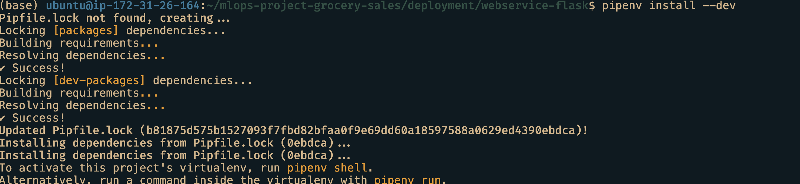
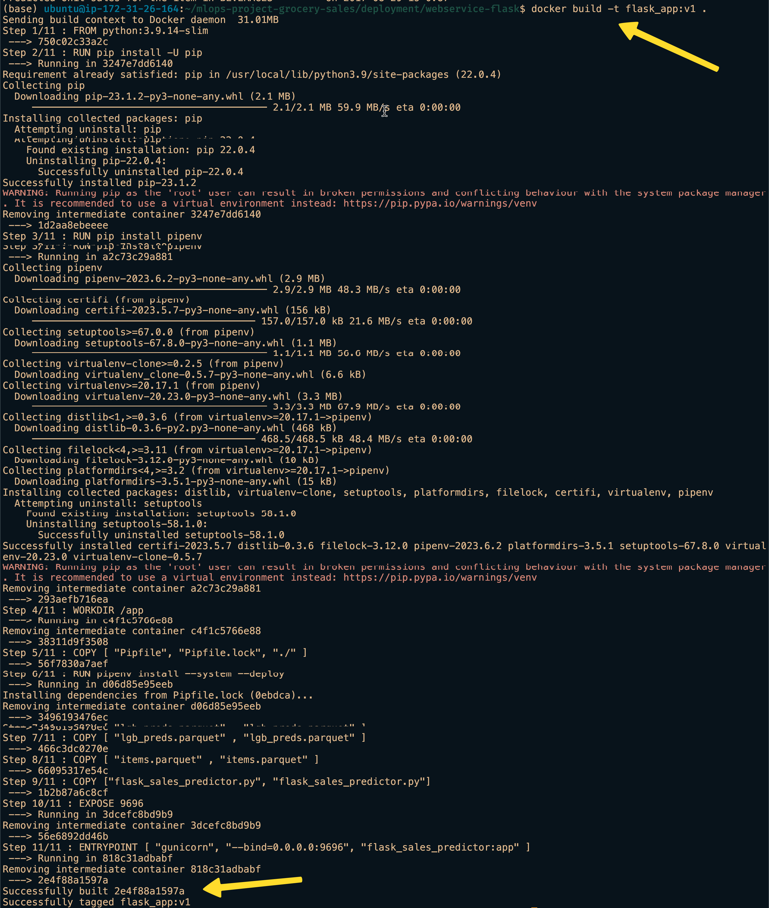
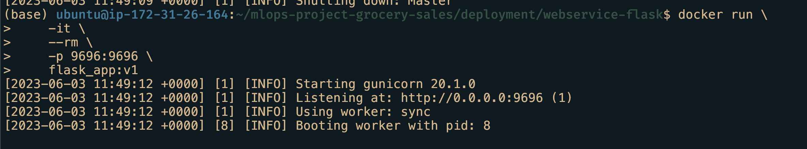
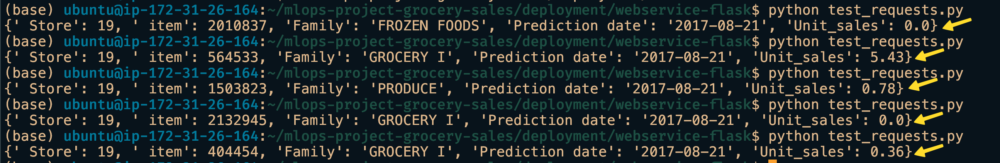

Introduction
A customer wants to build a web application on machine learning trained model. They approach us to find a simple solution. They give us a trained model file in parquet format. We need to look up for a potential sale price of a product within the given time period and store number. How can it be achieved?
Possible approaches
There are three possibilities to solve this problem:
Use python testing functionality, give the inputs and generate outputs.
Spin up a Flask application with an endpoint, pass arguments into it and generate outputs.
Build a docker image with Flask and its dependencies, run it and pass arguments.
All the three approaches are technical. In other words, there are chances of failures that may be replicable. To allow for minimal error, we will choose the docker option which packages the second, Flask application.
Docker
Docker is a service that allows to package the software as containers. This container contains all the necessary packages to successfully run the software. A customer’s machine might be different from the software developer’s. Using Docker we can eliminate that bottleneck. The customer just needs to use the container for their purpose. Any failure they encounter can be easily duplicated in developer’s environment.
In my previous post I show how to install docker in Apple Silicon and Ubuntu cloud instance. When I develop in my Apple Silicon Macbook, I get small, frustrating, unexpected errors only to know that it is due to Apple Silicon(ARM64) architecture. So for this purpose I recommend using an Ubuntu machine.
Why Flask?
Flask is a popular Python microframework for developing web applications. It is also known for its simplicity, flexibility and scalability. Since we want to use Python and make it simple for us to maintain, we will choose Flask.
Flask application
A web application is similar to visiting a website through an address. Such as visiting your gmail account using mail.google.com. The gmail website is hosted in many servers across the world. A server closest to your location will serve you when you open up the website. Similarly in our case we need to host our application somewhere. We will, for now, choose the local option; meaning in our local machine.
Using Flask we host our application in a particular location(endpoint) and through a port locally. I choose this location to be http://localhost:9696/predict-sales.
Below is the code for the flask application.
flask-app.py
import pandas as pd
from flask import Flask, jsonify, request
from zipfile import ZipFile as zf
import os
def read_parquet_files(filename: str) -> pd.DataFrame:
"""
Read parquet file format for given filename and returns the contents
"""
df = pd.read_parquet(filename, engine="pyarrow")
return df
if os.path.exists("lgb_preds.parquet"):
df_test_preds = read_parquet_files("lgb_preds.parquet")
else:
with zf("lgb_preds.parquet.zip") as zipfile:
zipfile.extract("lgb_preds.parquet")
df_test_preds = read_parquet_files("lgb_preds.parquet")
df_items = read_parquet_files("items.parquet")
app = Flask("flask-unit-sales-prediction")
def predict(find: request, item_idx: int) -> float:
"""
Takes the json inputs, processes it and outputs the unit sales
"""
try:
idx = pd.IndexSlice
x = df_test_preds.loc[idx[find["store_nbr"], item_idx, find["date1"]]][
"unit_sales"
]
except KeyError:
print("This item is not present this store. Try some other item")
return -0.0
else:
return float(round(x, 2))
@app.route("/predict-sales", methods=["POST"])
def predict_endpoint():
"""
flask predict endpoint
"""
find = request.get_json()
item = df_items.sample(1)
item_idx, item_family = item.index[0], item["family"].values[0]
pred_unit_sales = predict(find, item_idx)
result = {
" Store": find["store_nbr"],
" item": int(item_idx),
"Family": item_family,
"Prediction date": find["date1"],
"Unit_sales": pred_unit_sales,
}
return jsonify(result)
if __name__ == "__main__":
app.run(debug=True, host="0.0.0.0", port=9696)- 1
- Getting the trained model table
- 2
- Initialising the Flask app
- 3
- Declaring the endpoint with “POST” as method
- 4
- Predicted result that converted to JSON format
- 5
- Spin up flask app
Flask uses a library called gunicorn to spin up a HTML server. In the code we have dependencies for pandas, pyarrow, numpy. We can’t ask the customer to install these themselves. We intend to use Docker to prevent that criteria. But how to install these dependencies in a docker container?
Dependencies install
There are number of options available for us:
Use
pipandrequirements.txt. But tracking package versions might get tedious.Use
Anaconda/Miniconda. For local machine they’re fine but for docker container?they install so many unnecessary libraries making container huge in size.Use
Poetry. This one is developed to deliver packages. But still it includes libraries unnecessary to us.Use
Pipenv. It is much smaller, easy to write and use. Hence I will choose this.
Pipenv, Pipfile and Pipfile.lock
Pipenv is an advanced version of requirements.txt. It uses inline tables and TOML spec. We can easily give the package versions we want to install and pipenv internally creates a Pipfile.lock file that contains hashes to each package installed. A convenient solution for our purpose.
Our Pipfile looks like this:
Pipfile
[[source]]
url = "https://pypi.org/simple"
verify_ssl = true
name = "pypi"
[packages]
pandas = "*"
flask = "*"
pyarrow = "*"
gunicorn = "*"
numpy = "*"
[dev-packages]
requests = "*"
[requires]
python_version = "3.9"On the first run we need to install these packages locally and also to create Pipfile.lock. We can accomplish that using the command pipenv install --dev. I recommend running this inside conda’s base environment. Please don’t use system’s python to manage projects.

Dockerfile and building docker image
Dockerfile is a text file that give instructions to docker engine to build an docker image. We choose python 3.9-slim version, install pip and pipenv, copy all the necessary files, importantly expose the port 9696 and set gunicorn http server as the entrypoint to the image whenever the container is run.
Dockerfile
FROM python:3.9.14-slim
RUN pip install -U pip
RUN pip install pipenv
WORKDIR /app
COPY [ "Pipfile", "Pipfile.lock", "./" ]
RUN pipenv install --system --deploy
COPY [ "lgb_preds.parquet.zip" , "lgb_preds.parquet.zip" ]
COPY [ "items.parquet" , "items.parquet" ]
COPY ["flask_app.py", "flask_app.py"]
EXPOSE 9696
ENTRYPOINT [ "gunicorn", "--bind=0.0.0.0:9696", "flask_sales_predictor:app" ]To build a docker image, we use the command docker build -t flask_app:v1 . .
To verify it is created we can run docker images and look for the name.

Running the docker container
Our software is now packaged as an image. We need to somehow run it to use our application. We can run it through this command
Terminal 1
docker run \
-it \
--rm \
-p 9696:9696 \
flask_app:v1
Testing the application
The docker container should be up and running in terminal 1. Now all that is left is test it. For that we need one more file.
test_requests.py in terminal 2
import requests
find = {"date1": "2017-08-21", "store_nbr": 19}
url = "http://localhost:9696/predict-sales"
response = requests.post(url, json=find, timeout=10)
print(response.json())The test_requests.py file has the input in JSON format and the endpoint url http://localhost:9696/predict-sales. We leverage the requests library to make our requests.
Open up another terminal or another tab, activate virtual environment and run python test_requests.py. Just python needs to be present inside this environment as everything else is inside the docker container.
If everything goes well, we should the predicted product price printed.

Conclusion
We see how easy it is to build a docker image, deploy it. It requires a bit of steep learning curve but once learnt, it is easier to deploy anything using docker.